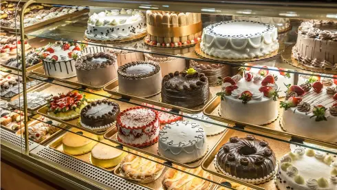
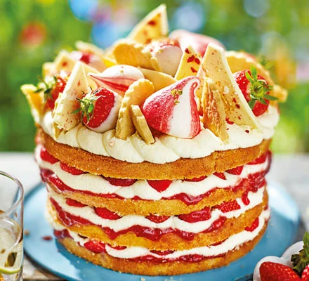

Cakes are one of the most poplular desserts around the world. They come in many different flavors, sizes, and designs. Cakes are often made for special occasions such as birthdays, weddings, holidays, and celebrations. Baking a cake can also be a fun and creative activity.
Cake decorating is a creative way to make a cake look as good as it tastes. Bakers can use frosting, sprinkles, fruit, candy, and other decorations to create different designs. Some cakes are simple, while others have detailed decorations made for special events. Cake decorating allows people to express their creativity and make each cake unique.
